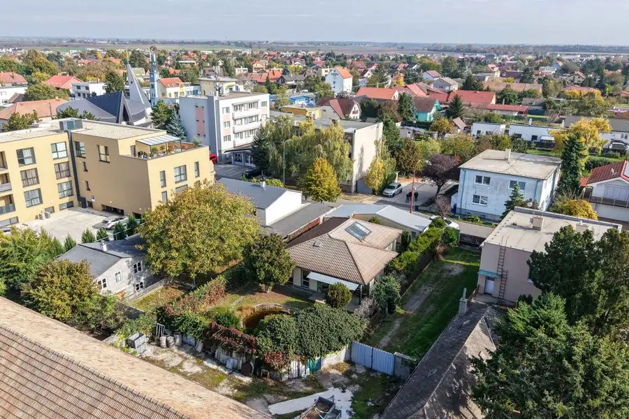
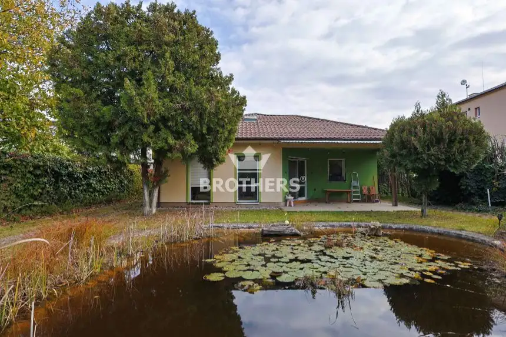
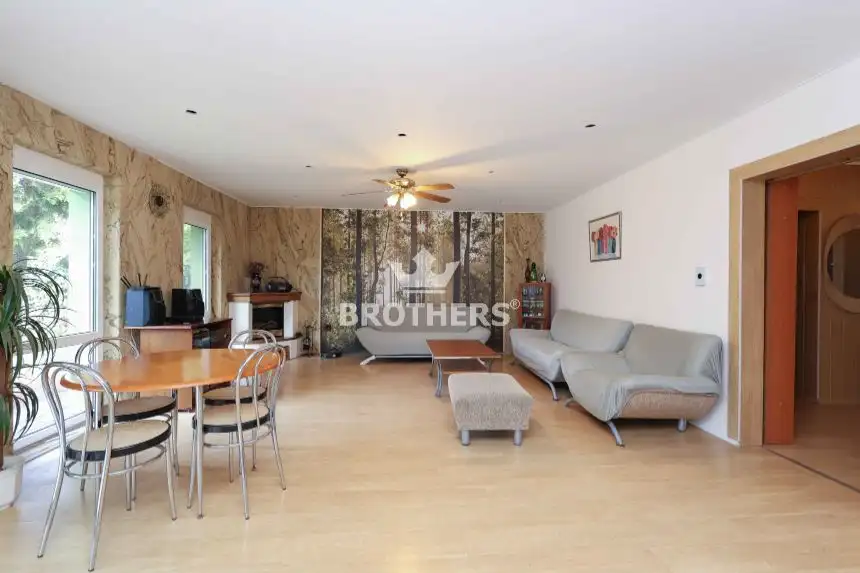
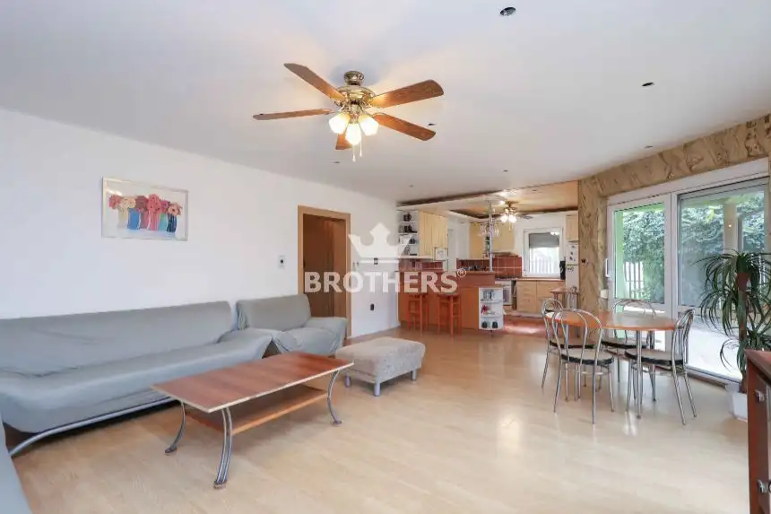
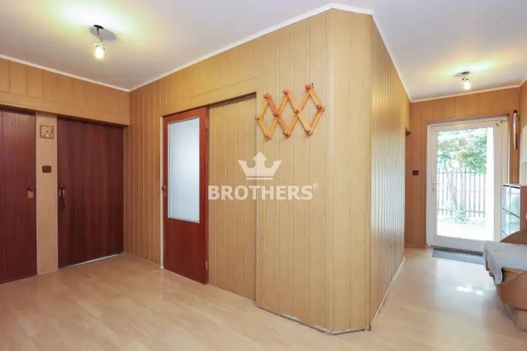
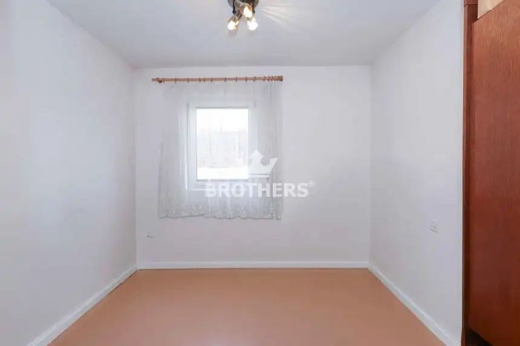
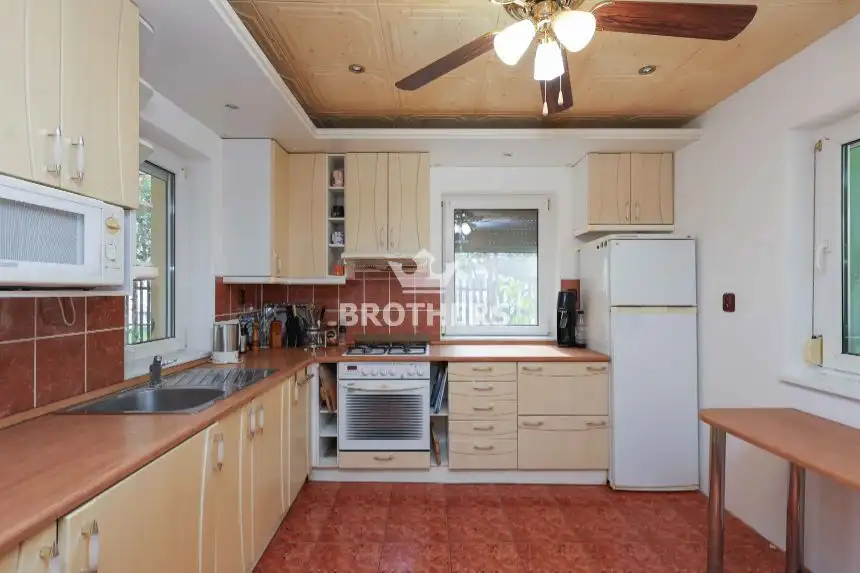
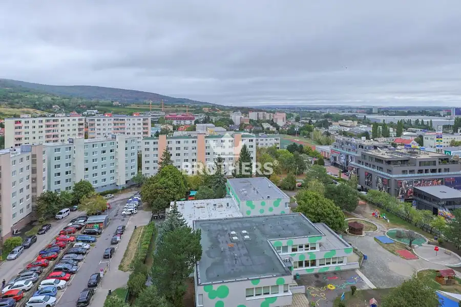
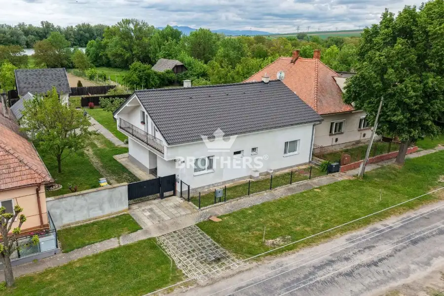
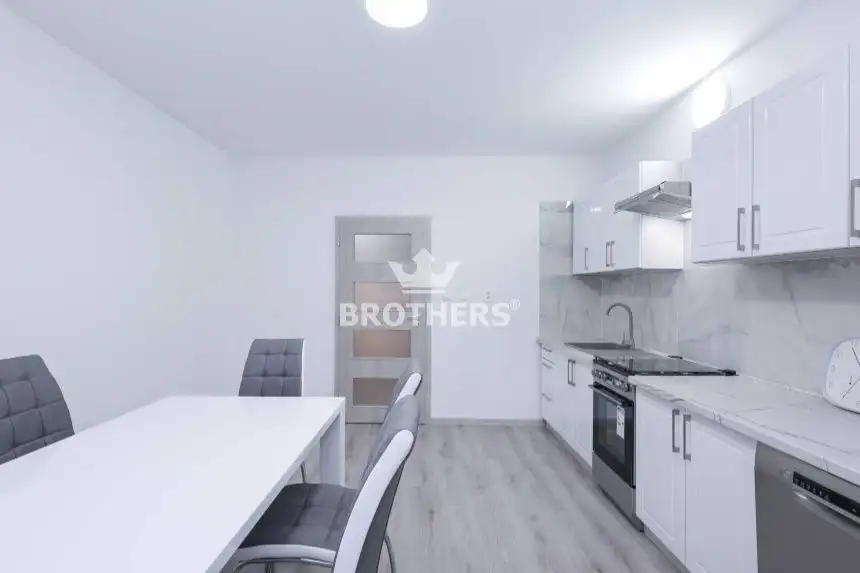

RODINNÝ DOM s obchodnou prevádzkou v centre obce - Alžbetin Dvor - Čerešňová ulica
Miloslavov







- Plocha156 m²
- StavPôvodný stav
- VlastníctvoOsobné
O nehnuteľnosti
Realitná kancelária BROTHERS ponúka na predaj 4 izbový rodinný dom so samostatnou obchodnou prevádzkou od ulice. Nehnuteľnosti sa nachádzajú v centre obce vo vyhľadávanej lokalite - Alžbetin dvor - Čerešňová ulica.DOM:pozemok: 566 m2 zastavaná plocha : dom 126 m2 + priestor 66 m2 podlahová plocha domu : 101 m2 podlahová plocha priestoru: 55 m2konštrukcia: tehlapôdorys na vyžiadaniekolaudácia v roku 2005všetky inžinierske sieteVÝHODY:v zastavanej časti rodinných domovkrásna okrasná záhrada s jazierkom, pivničkou a krbomzáhrada je oázou pokoja so zapadajúcim slnkomVynikajúca voľba pre ľudí, ktorí chcú bývať v centre obce a zároveň podnikať.Lokalita a umiestnenie domu ponúka kompletnú občiansku vybavenosť. Vlaková stanica na skok od domu.Ak ste sa zamilovali do tohto výnimočného domu ako ja, rád Vám ho odprezentujem naživo :)CENA: info v RKKONTAKT:Ohľadne obhliadky kontaktujte makléra:Mgr. Lukáš Mucha, MBA+421 918 749 359, lukas.mucha@brothersreal.comVyužite možnosť financovania cez HÚ, ktorý Vám radi pomôžeme vybaviť. K dispozícii je Vám náš hypotekárny špecialista, ktorý preverí Vaše hypotekárne možnosti a nájde to najlepšie riešenie pre Vás, čím ušetríte veľa času návštevou rôznych bankových inštitúcií. COPYRIGHT BROTHERS Real, s.r.o. – Fotografie, obrázky a texty sú autorským dielom a majetkomrealitnej kancelárie BROTHERS Real, s.r.o.PREZENTOVANÉ INFORMÁCIE BOLI NADOBUDNUTÉ V DOBREJ VIERE OD VLASTNÍKA NEHNUTEĽNOSTI A REALITNÁ KANCELÁRIA BROTHERS ICH SPROSTREDKÚVA AKOINFORMATÍVNE ÚDAJE, ZA ICH SPRÁVNOSŤ A ÚPLNOSŤ NENESIE ZODPOVEDNOSŤ.
Parametre
- Doprava
- Diaľkový autobus, Vlak, MHD
- Druh
- Rodinný dom
- Druh domu
- Klasický dom
- Dátum zverejnenia
- 30. 10. 2025
- Dĺžka pozemku
- 35
- Energetický certifikát budovy
- V príprave
- Plocha pozemku
- 566 m²
- Počet nadzemných podlaží
- 1
- Prístupová komunikácia
- Asfaltová
- Rok výstavby
- 2005
- Stav nehnuteľnosti
- Pôvodný stav
- Terén pozemku
- Rovinatý
- Typ
- Predaj
- Typ konštrukcie
- Tehlová
- Vlastníctvo
- Osobné
- Vybavenie
- Garáž
- Vybavenie objektu
- Zariadený so spotrebičmi
- Zariadenie
- Čiastočne zariadené
- Zastavaná plocha
- 192 m²
- Úžitková plocha
- 156 m²
- Šírka pozemku
- 16
Kde to je


Mohlo by Vás zaujímať

BytNové 219 900 €Priestranný 2-izbový byt | 62 m² | 12. poschodie | loggia | Rača | veľký potenciál Rača, Bratislava 2-izbový62 m²12. podlažie
DomNové Cena na vyžádáníPokoj, priestor a príroda – exkluzívny rodinný dom neďaleko Nitry Malé Zálužie 275 m²
DomNové 1 300 €DOM - 3 izbový - 150 M2 - BRATISLAVA III. - Rača - ulica pri Vinohradoch Rača, Bratislava 150 m²